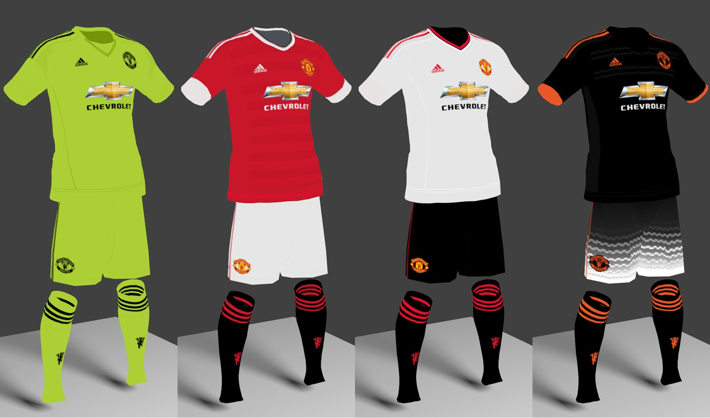

Full Name: Manchester United Football Club
Founded: 1878; 138 years ago, as Newton Heath LYR F.C. 1902; 114 years ago, as Manchester United F.C.
Stadium Name: Old Trafford, Manchester, UK
Current Manager: Louis Van Gaal
Club Owners: Manchester United plc
Shop: ManUtd Store
Official Sponsors: Adidas (Kit Manufacturer), Chevrolet (Shirt Sponsor)
Other Sponsors: AON, Epson, DHL
Current Kits: 